速览
N64 第一次带来模拟摇杆。和数字十字键相比，它的不同在于方向可以无级获取、推的深度也能无级获取——非常适合在 3D 空间行走的游戏，日本甚至称之为「3D 摇杆」。但樱井还想到：可以获取输入推到边缘所花的时间。他擅自取名为「弹摇杆输入」（はじき入力，英文 flick input），在《大乱斗》等作品中成为特色，让操作感觉带有实体感。在那以前的游戏里，冲刺或奔跑一般要朝同一方向连按两下，或者像「B 键冲刺」那样配合按键——总之需要两步或两种输入，稍显复杂。用推摇杆的速度改变强弱，操作体验上带有感情，也好懂。反面是会出现误触（不小心冲刺）等缺点；《大乱斗 特别版》可以调整弹摇杆的灵敏度。《新·光神话 帕尔提娜之镜》里它同时用于冲刺和回避：把对手的攻击吸引过来再闪，正好与风险/回报咬合，操作形式也能做得简单。企划带有新设备的游戏机时，会先想一想「用它能做什么」，但不该盲目引入——比如《大乱斗X》就没打算把 Wii 的双节棍和指针功能用满。能尽早在模拟摇杆这种极其通用的设备上做出独特的操作方法，樱井觉得很好；没有它，大乱斗大概会乏味得多。
1. 模拟摇杆带来了什么 0:04
第一次在任天堂 64 上接触模拟摇杆时，它与数字十字键的不同在于：方向可以无级获取，推的深度也可以无级获取。
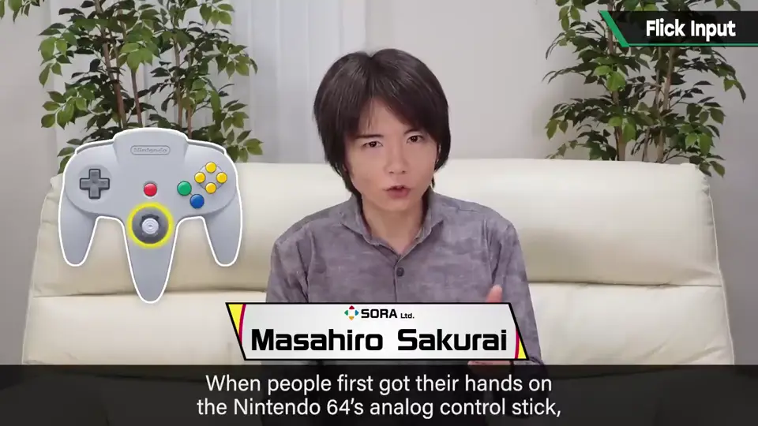
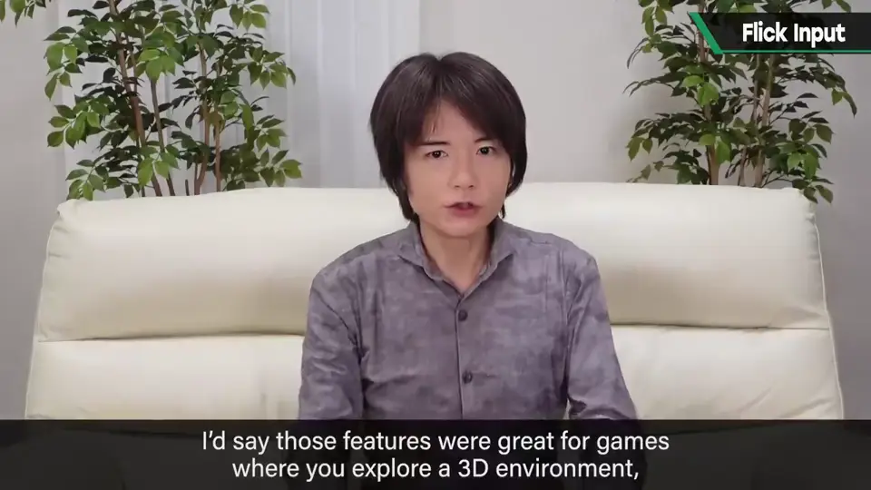
这非常适合制作在 3D 空间中行走的游戏——在日本它甚至被叫作「3D 摇杆」。
2. 弹摇杆输入 0:30
但樱井还想到另一点：可以获取输入推到边缘所花的时间。
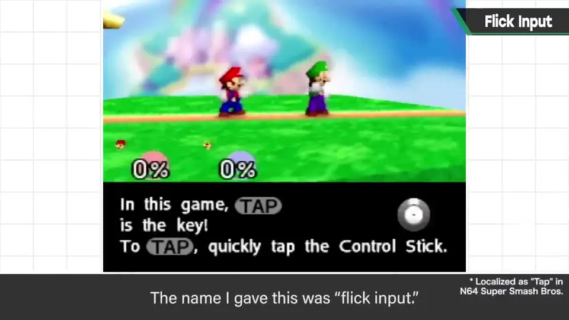
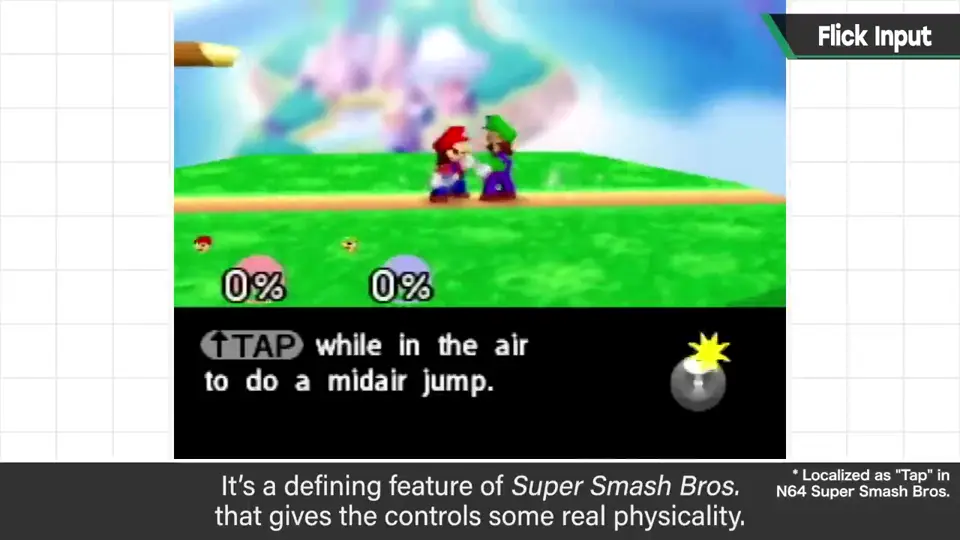
3. 以前要两步才能冲刺 0:48
在那以前的游戏里，冲刺或奔跑通常是朝同一方向连按两下，或者像所谓「B 键冲刺」那样配合按键让角色跑起来。
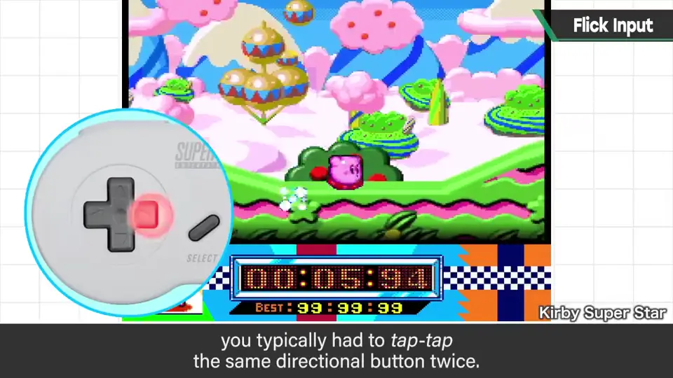
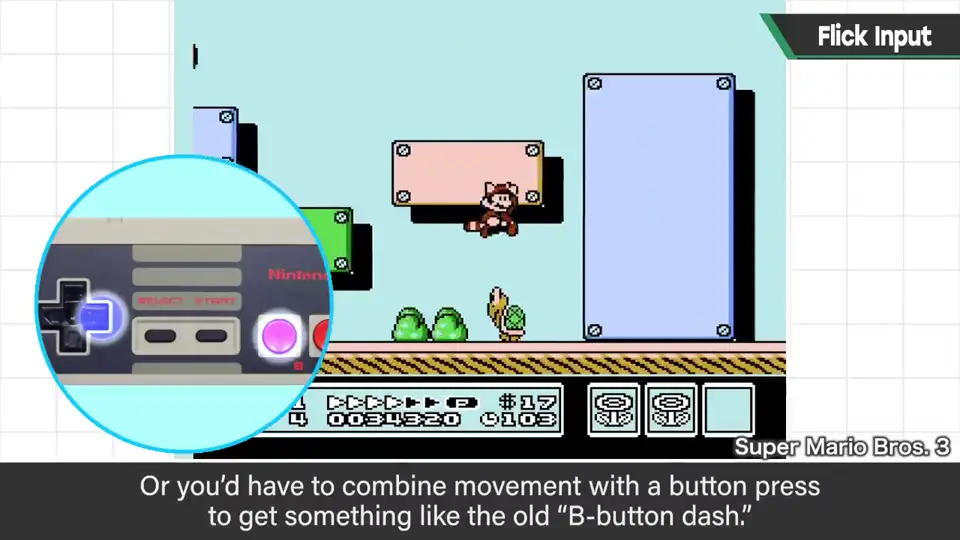
无论哪种，都需要两步或两种输入，操作稍显复杂。
4. 优点与缺点 1:06
用推摇杆的速度改变强弱，在操作体验上带有感情，也很好懂——樱井认为这很好。
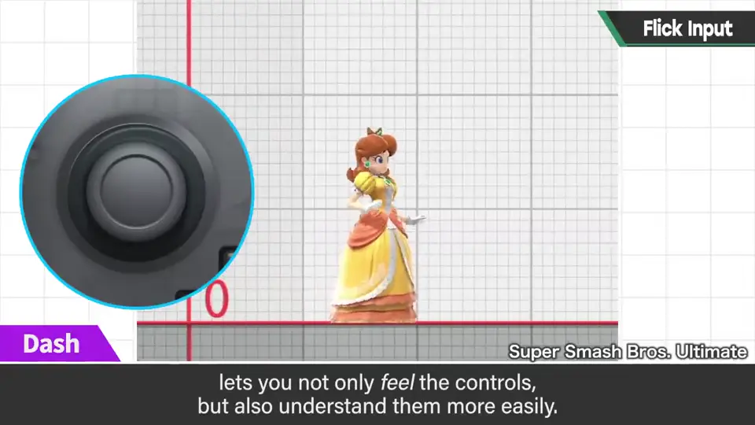
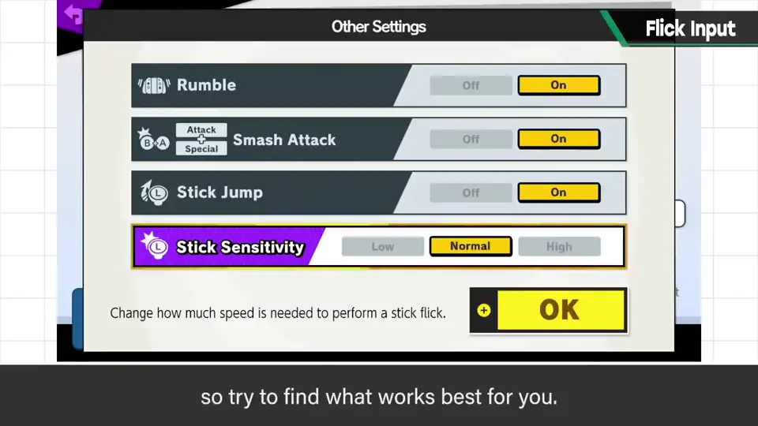
反过来也有缺点：会出现误触，比如不小心冲刺。
《大乱斗 特别版》中弹摇杆的灵敏度可以调整，可以设到自己舒服的程度。
5. 《新·光神话》：冲刺兼回避 1:29
在《新·光神话 帕尔提娜之镜》里，弹摇杆同时用于冲刺和回避。
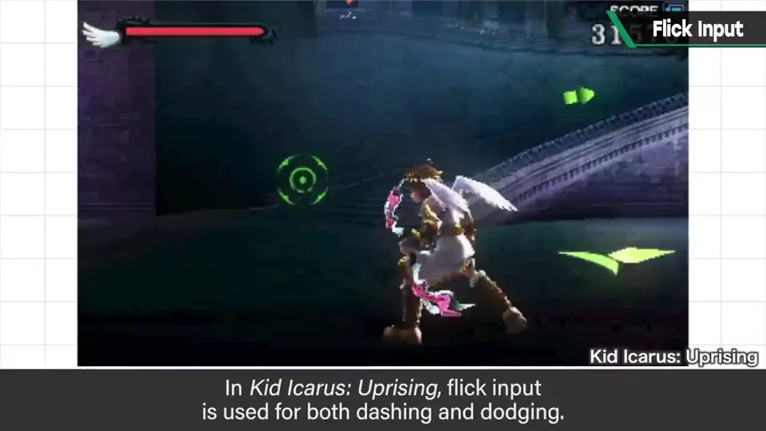
把对手的攻击吸引过来再躲开，正好与风险和回报咬合，操作形式也能做得简单，好处很多。
6. 别盲目套用新设备 1:40
企划带有新设备的游戏机时，会先想一想用它能做什么；但樱井认为也不应盲目引入。
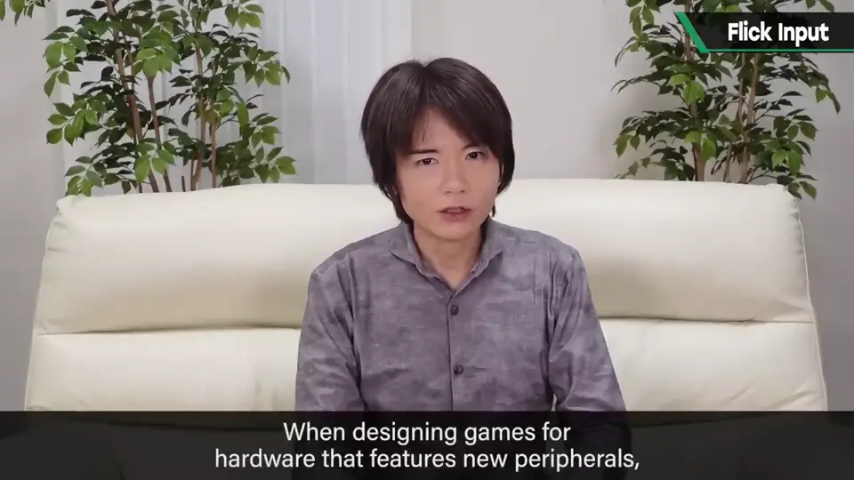
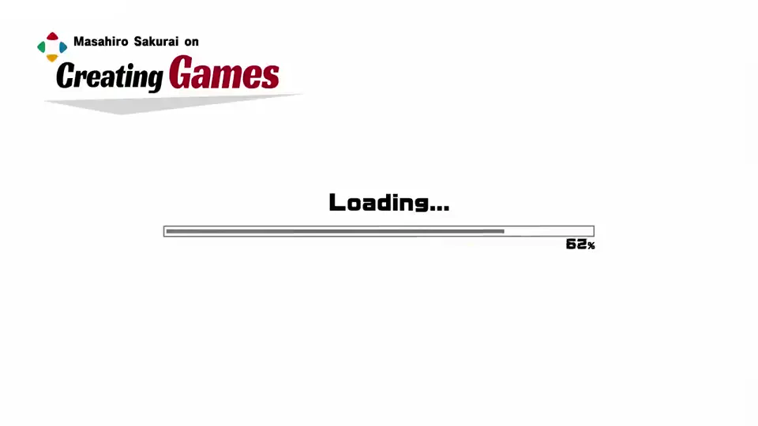
例如在《大乱斗X》中，他并没打算把 Wii 的双节棍和指针功能全部用上。
自测题
1. 「弹摇杆输入」利用了模拟摇杆的什么信息？
摇杆推到边缘所花的时间（推的快慢），而不只是方向和深度。 0:30
2. 弹摇杆相比以前的冲刺操作好在哪里？
以前需两次输入或配合按键；弹摇杆一步完成，用快慢区分强弱，有感情又好懂。 0:48
3. 弹摇杆的缺点是什么？《大乱斗 SP》怎么处理？
容易误触（如误冲刺）；SP 可调节弹摇杆灵敏度。 1:18